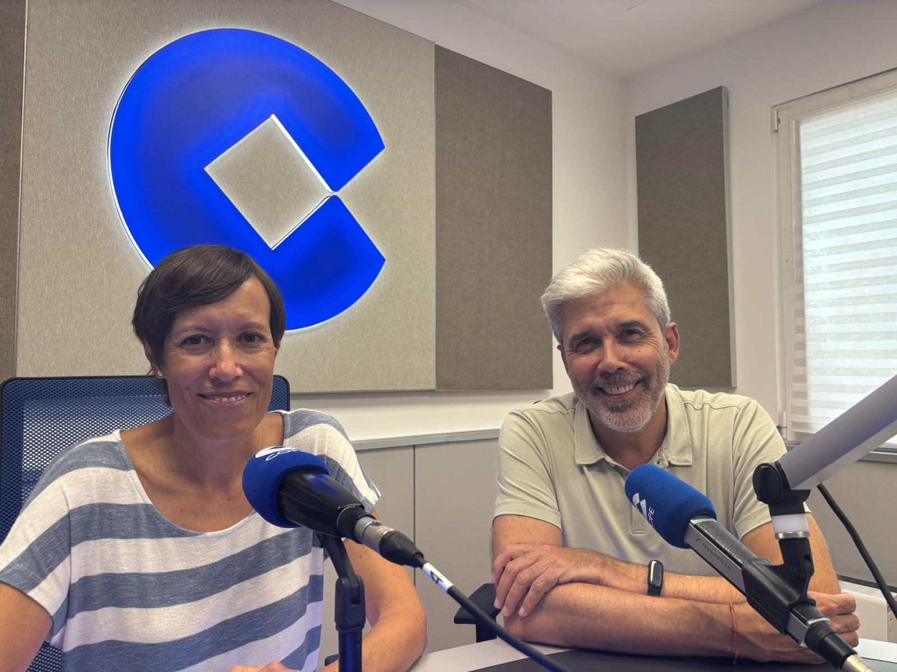

En un mundo marcado por las prisas, la incertidumbre y a menudo por la indiferencia, Cáritas Valencia se ha mantenido durante décadas como un faro de esperanza para miles de personas en situación de vulnerabilidad.
COPE ha acompañado a la sociedad valenciana a través de las ondas, mientras que Cáritas lo ha hecho con apoyo social, logístico y económico, ambos con unos valores profundamente cristianos.
Coincidiendo con el 60 aniversario de la emisora y con la trayectoria paralela de una organización que ha estado siempre al lado de los valencianos, Aurora Aranda, Directora de Cáritas Valencia, explica cómo nacieron, cómo han estado al lado de los valencianos en estos últimos 60 años y a qué retos nos enfrentamos como sociedad en el futuro.
Presencia constante en los momentos más difíciles
La historia reciente de Valencia no se entiende sin la huella de Cáritas. La organización ha estado junto a las familias golpeadas por la crisis industrial de los años 70 y 80, cuando el desempleo marcaba el futuro de muchos hogares. Fue refugio indispensable tras la riada del Turia o durante la Dana, donde cientos de voluntarios trabajaron hombro con hombro para ayudar a los damnificados.
Su compromiso se reafirmó también en la crisis económica de 2008 y en la pandemia de la COVID-19. Como se destaca en la conversación: "su misión trasciende la ayuda material, porque se trata de dignificar, acompañar y tender la mano desde unos valores profundamente cristianos".
Valores siempre actuales
Sobre la vigencia de los valores sociocristianos, Aurora no duda; están vigentes "sin duda. La solidaridad, el compromiso, la generosidad, la fraternidad o el amor, la caridad bien entendida no es una limosna, tiene que ver con un gesto de fraternidad, de cariño, de cercanía, de acompañamiento, de compromiso".

Mirando hacia los próximos 60 años
Al igual que la radio aborda diferentes retos, también lo hace Cáritas. Según Aranda, los retos en el futuro que más le preocupan "En lo que tiene que ver con la realidad social. El primero, la vivienda, la necesidad de una vivienda adecuada para todas las personas. Hoy en día la vivienda no es solamente cuatro paredes. Para nosotros la vivienda es un hogar, un espacio de seguridad, de vínculo, de construcción de la familia. Una vivienda hoy es fundamental", explica en los micrófonos de COPE.
El segundo gran reto es el empleo digno. Aranda recuerda cómo ha cambiado la percepción en apenas unas décadas: "antes decíamos que los mileuristas, y hoy en día con mil euros no se puede vivir directamente. Antes lo reclamábamos como si fuera el techo total, pero hoy tenemos gente pobre con trabajo. Esta es la realidad que nos estamos encontrando ahora".
El tercero está relacionado con la realidad migrante, especialmente con las personas en situación administrativa irregular. "Cáritas siempre ha estado al lado de los últimos, de los más invisibles. Una persona en situación administrativa irregular no tiene acceso a los derechos, y la conciencia de que todas las personas necesitamos que nuestros derechos sean reconocidos es fundamental".
La reflexión de Aurora es la que todos debemos hacernos: "Esta sociedad se construye entre todos y todas. Lo que le pasa a mi hermano también me compete y me preocupa a mí".